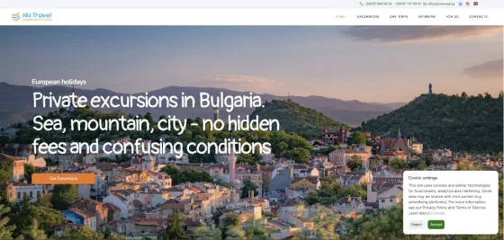
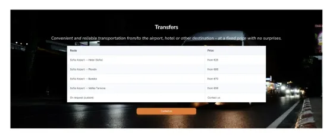
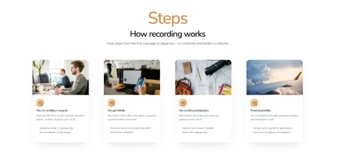

Tools used
Tools used in this redesign
Adobe Creative Cloud
Framer
The Brief
A full redesign for a travel agency ready to scale internationally.
Overview
Nistravel.bg required a full website redesign to modernize its digital presence and support expansion to international markets.
Main Problems
The previous version had outdated visuals, no multilingual support, missing legal/contact pages, no cookie-consent layer, and limited homepage content blocks.
Goal
Deliver a complete UX/UI refresh that improves trust, usability, and conversion readiness on desktop and mobile.
Result Direction
A modern multilingual travel website with clearer content hierarchy, stronger page coverage, and responsive performance.
Our Process
How this case study was delivered, step by step.
Eight focused phases from audit and architecture to multilingual and responsive validation.
01
Discovery & Audit
Audited the old website structure, visual hierarchy, and booking journey gaps across homepage and trip detail pages.
02
Problem Framing
Mapped core blockers: dated UI, no multilingual flow, missing legal/contact pages, and weak mobile readability.
03
UX Architecture
Restructured content flow so travellers can move from trust-building content to excursion discovery and enquiry faster.
04
Visual Redesign
Modernized typography, spacing rhythm, cards, and CTA hierarchy while preserving travel-first storytelling.
05
Internationalization Setup
Prepared and validated multilingual content support for English and Spanish audiences.
06
Page Expansion
Added missing high-trust pages such as Contact Us, Privacy Policy, and Terms & Conditions.
07
Responsive QA
Improved mobile readability, section stacking, and touch interactions across core pages and forms.
08
Final Validation
Reviewed before/after consistency, CTA behavior, and deployment readiness for the redesigned experience.
Hero Section Redesign
A stronger first impression above the fold
The homepage hero was rebuilt to communicate value instantly with a cleaner visual hierarchy, stronger headline clarity, and clearer CTA direction.
Transfers Section Added
Clear transportation offer with instant pricing context
We introduced a dedicated Transfers section so users can quickly understand available routes, baseline prices, and contact options without unnecessary back-and-forth.
Trip Card Design
Excursion cards redesigned for clarity and conversion
Trip cards were redesigned with clearer information hierarchy, stronger readability, and focused actions so travellers can evaluate and move forward faster.
Steps to Book Section
A transparent booking journey from first message to departure
We added a step-by-step booking section to remove uncertainty, set clear expectations, and improve trust for first-time travellers.
Delivered sections
UI results from the redesign
Key interface areas that were redesigned and added across the Nistravel experience.



Outcomes
Modernized brand presence, multilingual readiness, and stronger trust architecture.
The redesign transformed Nistravel.bg into a scalable travel platform that supports clearer browsing and better conversion paths.
More works